Section 1
About Figaf Manager
Simplifying the process of deploying, updating and managing the Figaf Tool by replacing a long sequence of manual btp and cf commands.
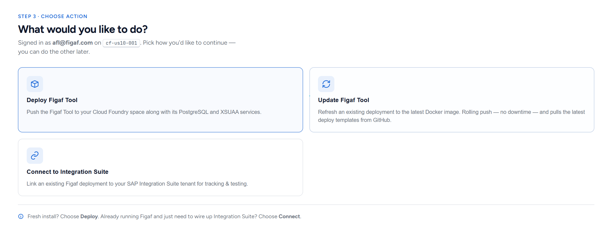
figaf-manager. Copy it — this is the
manager-app's address.Figaf Manager is a web application built to be deployed into a Cloud Foundry space in your BTP subaccount. It signs you in to SAP BTP and Cloud Foundry, creates the services the Figaf Tool needs, pushes the Figaf Tool, and later updates or connects it.
When you are finished, your space contains two groups of applications:
figaf-managerfigaf-manager-router |
The app itself. Small (128 MB). It can be deleted when the service is no longer needed, or kept for updating with the upcoming Figaf releases. |
<ID>-app<ID>-router |
The Figaf Tool. <ID> is the Application ID you
choose. |
plus the services they are bound to — a PostgreSQL database (figaf-db
by default) and an XSUAA instance (figaf-xsuaa) that carries the Figaf
Tool's roles.
The collapsible bar along the bottom opens a terminal that
shows the exact btp and cf commands being run and their
output as they happen. Click it to expand. Passwords, service keys and tokens are
filtered out of that stream before you see them.
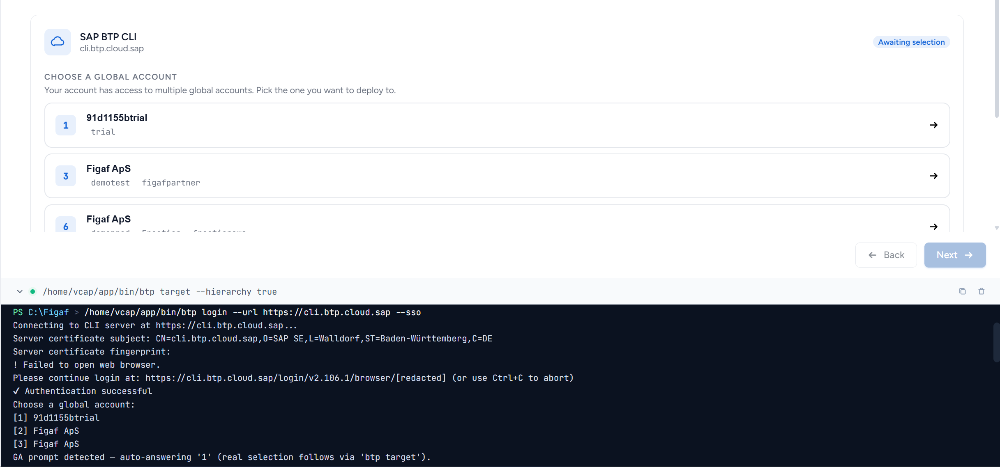
Section 2
Before you start
Make sure you have the necessary entitlements and resources available.
In your BTP subaccount
| Check | Detail |
|---|---|
| Cloud Foundry environment | The subaccount needs a Cloud Foundry environment instance, with at least one org and space. Subaccounts without one are visible in the manager-app but cannot be selected. |
| Your role in the space | Space Developer. You need it to push applications and to read the application log that carries the setup token. Space Auditor can read logs but cannot deploy. |
| PostgreSQL entitlement | Service postgresql-db. On a trial account you get the
trial plan; on a paid account, typically development
or standard. The manager-app reads the plans available to you from the
marketplace — if the list is empty, the entitlement is missing. |
| XSUAA entitlement | Service xsuaa, plan application. One instance for
the Figaf Tool (figaf-xsuaa). Enabling persistent login
(section 6) creates a second one (figaf-manager-xsuaa). |
| Memory quota | Minimum: 128 MB for the Manager App. 3.7 GB for the Figaf Tool app (the default), 128 MB for its router, and another 128 MB if you enable persistent login. The 4GB of trial should be sufficient for demo purposes. |
| Disk quota | Minimum: 512 MB for the Manager App. The Figaf Tool application requests 10 GB of disk. Separate from the memory quota and rarely a problem, but check it if a push fails on disk rather than memory. |
| Integration Suite (optional) | Only needed for section 9. The it-rt service offering must be
available in the subaccount. |
Section 3
Deploying Figaf Manager into your space
This is the one step you do by hand in the BTP cockpit.
3.1 Get the two files
From the Figaf Manager release on github, take both assets:
figaf-manager-app-<version>.zip | The application archive. |
manifest.yml | The deployment descriptor. Use it as-is. |
3.2 Deploy from the cockpit
- In the SAP BTP cockpit, open your subaccount → Cloud Foundry → Spaces → your space.
- Go to Applications and choose Deploy Application.
- For Application Archive, upload
figaf-manager-app-<version>.zip. - For Deployment Descriptor, upload
manifest.yml. - Click Deploy.
- Open the deployed
figaf-managerapplication and note its Application Routes — see below.
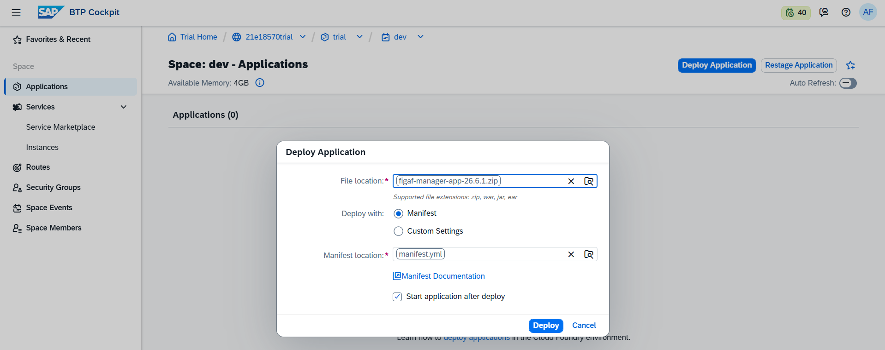
The manifest creates a single application named
figaf-manager with 128 MB memory, 512 MB disk, and
a randomly generated route.
Manifest variables
Relevant variables you can change in the manifest:
| Variable | Effect |
|---|---|
memory | Memory quota for the application. Minimum 128 MB. |
disk_quota | Disk quota for the application. Minimum 512 MB. |
FIGAF_LOG_LEVEL | Verbosity of the manager-app's own logging: off, cli (default — every external command), ipc, net. |
FIGAF_IDLE_SELF_DESTRUCT_HOURS | Have the manager-app remove itself after this many hours with no activity. Off by default. |
FIGAF_IDLE_SELF_DESTRUCT_GRACE | Minutes of warning logged before that happens. Default 30. |
Open the figaf-manager application in the cockpit and look at
Application Routes. Because the manifest uses a random route, the hostname is
generated — something like
figaf-manager-cheerful-antelope.cfapps.<region>.hana.ondemand.com.
That is the address you will use for everything that follows.
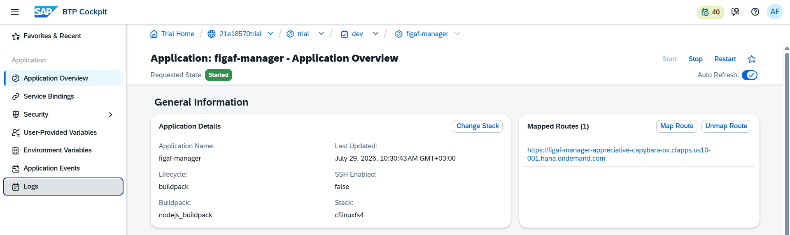
figaf-manager. Copy it — this is the
manager-app's address.3.3 Access - Get the Setup Token
The app's route is publicly accessible, it requires authentication. On its first start it generates a one-time setup token, prints it once to its own application log. It is required to claim the token to proceed. Only somebody who can read your space's logs can get that token.
- Cockpit → your space → Applications →
figaf-manager. - Open the Logs tab.
- Find the most recent line beginning with
[SETUP] Token. Claim it as soon as possible. - Open
figaf-manager→ Application Overview → Mapped Routes →https://<your-route>/ - Paste the token into Setup token.
- Click Claim and continue.
- On success the page opens the Figaf Manager app.
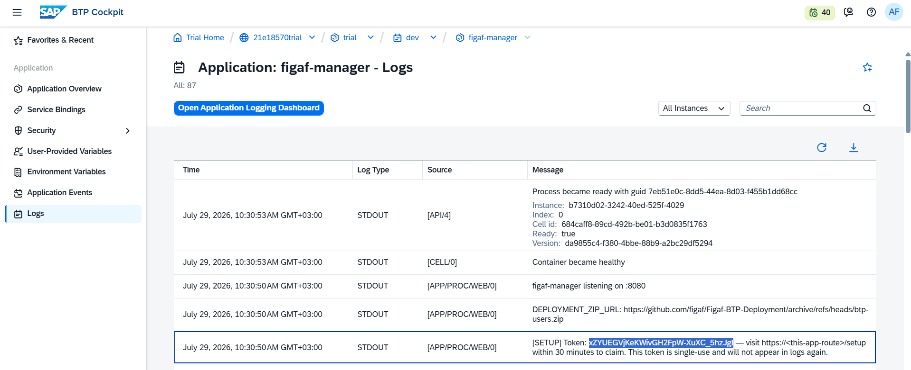
[SETUP] Token: line in the application log. Copy the token
value only.Your browser now holds a session that lasts 8 hours. The token is single use. The first successful claim consumes it; any later attempt is refused.
The token is written to the application log, so anyone who can read the space's logs — Space Developer or Space Auditor — can claim this installer. If the space has a log drain configured (an SIEM, a Loggregator forwarder, the Application Logging Service), the token was forwarded there too. Treat those systems as trusted, or restage to rotate the token.
Cockpit → your space → Applications → figaf-manager → ⋯ →
Restage. The application comes back up, writes a new [SETUP] Token:
line to the log, and you claim it exactly as above.
Section 4
Signing in
4.1 Welcome
The app runs a few checks its environment before letting you move forward. Click Continue.
What each check means
| Row | What it means |
|---|---|
| SAP BTP CLI | Reads bundled in container — the tool ships inside the app, so there is nothing to install. |
| Cloud Foundry CLI | Likewise bundled. |
| Docker Hub reachable | The real check. The manager-app contacts hub.docker.com and reports the latest Figaf image tag it found. If this fails, the space has no outbound access to Docker Hub and the deployment cannot pull the image. |
| Container ready | A filesystem sanity check. |
| Installer version | Whether a newer Figaf Manager exists. This row never blocks you — see section 10. |
4.2 Sign in
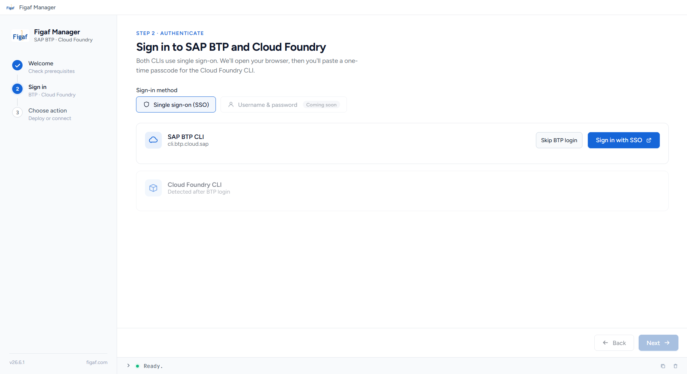
SAP BTP Login
- Click Sign in with SSO. A browser tab opens for SAP sign-in. Requires Global Account.
Skipping this step will only allow you to update an already existing deployment of the Figaf Tool.
You will then need to supply the API endpoint yourself for the CF Login. Subaccount → Cloud Foundry Environment → API endpoint (for example https://api.cf.us10.hana.ondemand.com).
- Choose a global account. If your user has access to more than one global account.
- Then choose a subaccount. Subaccounts without a Cloud Foundry environment are listed but greyed out and tagged No CF.
On success the card shows Connected with a summary: global account, subaccount, subaccount ID, org, landscape and API endpoint. Switch Account restarts the picker; Sign out clears the session.
Cloud Foundry Login
- Click Get passcode in browser. A tab opens on your landscape's passcode
page (
login.<region>.hana.ondemand.com/passcode). - Copy the code shown there.
- Paste the One-time passcode back into the app and
- If your user can see several orgs, Choose a Cloud Foundry org matching your BTP subaccount. This is also usually marked as Recommended
- Then Choose a space.
- Click Next.
The card shows Connected with your org and space. Switch Org lets you re-target later without signing out; Sign out ends the CF session. Once both cards are connected, Next is enabled.
Section 5
Choose action
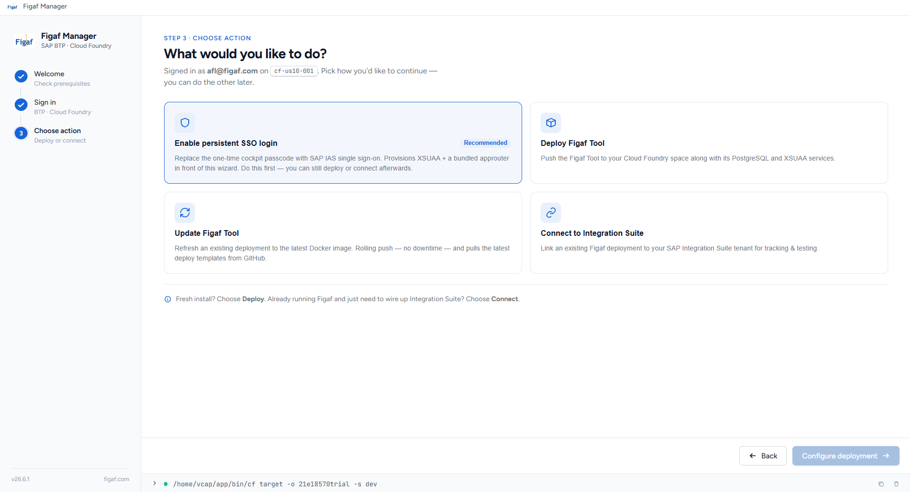
| Tile | Pick it when | See |
|---|---|---|
| Enable persistent SSO login Recommended | Replaces the cockpit-log token with SAP IAS single sign-on. | §6 |
| Deploy Figaf Tool | Fresh installation. | §7 |
| Update Figaf Tool | You already run Figaf and want a newer image. | §8 |
| Connect to Integration Suite | You already run Figaf and want to wire it to your Integration Suite tenant. | §9 |
Section 6
Enabling persistent SSO login
With persistent SSO, you won't need to restage and generate a new token each time you want to access the Figaf Manager. An SAP approuter is deployed in front of the app and takes over the public route. From then on every request is authenticated against your subaccount's identity provider before it reaches the manager-app.
6.1 What changes
| Before | After | |
|---|---|---|
| Authentication | One-time token from the cockpit log | SAP IAS single sign-on |
| Who can get in | User who submits the token | Anyone you assign FigafManagerAdmin to |
| If you lose your session | Restage to create a new token | Sign in again |
| Extra objects in your space | — | figaf-manager-approuter (128 MB) and the figaf-manager-xsuaa service |
6.2 Before you press Start
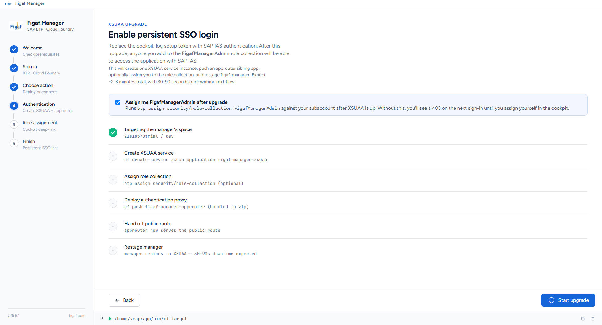
The Cloud Foundry target check is the first row of the list. The approuter has to be pushed into the same org and space the manager-app itself runs in, so the manager-app verifies that first.
- Wrong Cloud Foundry target — it shows what it expected versus where you actually are. Click Go to login, use Switch Org on the sign-in screen to re-target, then come back through Choose action → Begin upgrade.
- Couldn't verify Cloud Foundry target — same remedy.
Start upgrade stays disabled until this check passes.
Assign me FigafManagerAdmin after upgrade is ticked by default. Leave it ticked. Without it you will be signed in but rejected with a 403 until you assign the role to yourself.
6.3 Running the upgrade
Click Start upgrade. Five phases run in order:
The five phases
| Phase | What happens |
|---|---|
| Create XSUAA service | Creates figaf-manager-xsuaa, which also materialises the FigafManagerAdmin and FigafManagerOperator role collections in your subaccount. |
| Assign role collection | Grants you FigafManagerAdmin. Skipped if you unticked the option. |
| Deploy authentication proxy | Deploys figaf-manager-approuter and binds it to the XSUAA service. |
| Hand off public route | The approuter takes over the public URL; the manager-app moves to an internal route behind it. |
| Restage manager | The manager-app rebinds to XSUAA and restarts. Expect 30–90 seconds offline here. |
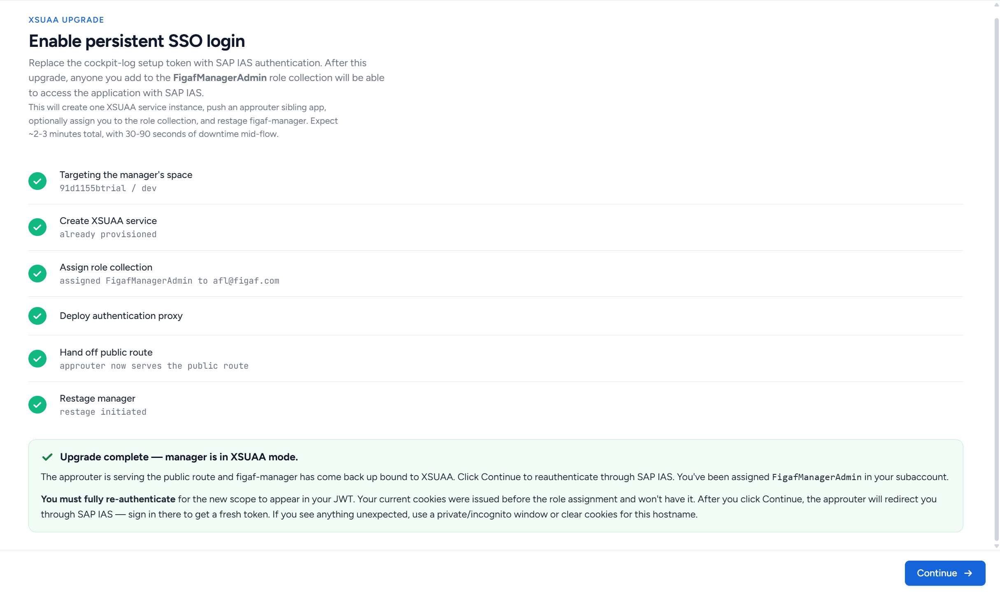
6.4 Coming back
When the phases finish you see a success panel. Continue is deliberately locked with Waiting for manager to come back… while the manager-app confirms it is actually back up in the new mode. This prevents you from landing on the old setup page mid-restart. It usually unlocks within a minute.
Click Continue. The page reloads through the approuter and you are sent to SAP IAS to sign in.
If the role assignment failed, or to assign roles to other users, you can do it in the cockpit: Cockpit → your subaccount → Users → the person → Role Collections:
FigafManagerAdmin | Full use of the manager-app; |
FigafManagerOperator | Non-destructive operations only. |
Section 7
Deploying the Figaf Tool
From Choose action, pick Deploy Figaf Tool and click Configure deployment.
7.1 Step 4 — Configuration
This is the only screen with real decisions on it. Most fields are already filled in from what the manager-app detected.
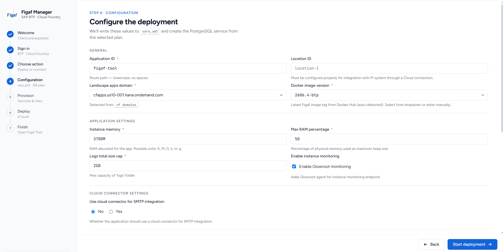
General
| Field | What to enter |
|---|---|
| Application ID * | The name of your deployment. It becomes the public hostname and both application names (<ID>-app, <ID>-router). Lowercase, no spaces, no underscores. Default figaf-tool. A company-ish prefix such as acme-figaf is a good convention. |
| Location ID | Leave empty unless you will connect a PI/PO system or a local SMTP server through SAP Cloud Connector, in which case it must match the location ID configured there. |
| Landscape apps domain * | Detected from your space. Normally only one entry, e.g. cfapps.eu10-004.hana.ondemand.com. |
| Docker image version * | Pre-filled with the newest figaf/app tag ending in -btp. Pick another from the dropdown or type one. |
Application settings
| Field | Guidance |
|---|---|
| Instance memory * | Default 3700M, sized to fit a trial org. For production use 4 G or more — 4 G is the product minimum. Units: K, M, G. |
| Max RAM percentage * | Share of the instance memory used as the maximum heap. 50 is the default. |
| Logs total size cap * | The application's own log folder. Default 2GB. |
| Enable instance monitoring | The Enable Glowroot monitoring checkbox — adds a monitoring agent and its endpoint. On by default. |
Cloud connector settings
Use cloud connector for SMTP integration — leave No unless your mail server is on-premise and reached through SAP Cloud Connector. Choosing Yes reveals Cloud connector destination name, which must match a destination you configured in the SAP BTP Destination service.
CF services
| Service | Notes |
|---|---|
| Your database service ( figaf-db by default) | Always bound. Cannot be unchecked. |
figaf-xsuaa | Always bound. Carries the Figaf Tool's roles. |
figaf-connectivity | Optional. Only for PI/PO integration. Created for you in the next step if you tick it. |
figaf-destination | Optional, same purpose. |
PostgreSQL service
| Field | Guidance |
|---|---|
| Database service name | Default figaf-db. Change it to use a custom name, or to point at a PostgreSQL instance that already exists in the space. |
| Service plan * | Read live from your marketplace. trial is free and shared; paid plans differ in storage, availability and backups. If the list is empty or missing the plan you expect, the entitlement is not assigned to the subaccount. |
PostgreSQL parameters
The PostgreSQL service broker accepts different parameters on trial and paid accounts, so the manager-app shows different fields.
Trial subaccount is ticked automatically when your global account subdomain
contains "trial". Trial brokers accept only two parameters: Engine version
(16) and Locale (en_US).
Untick it for a paid account and you get the commonly tuned settings for your hyperscaler — Storage (GB), Memory (GB), Backup retention (days), Public access, and either Multi-AZ (AWS/Azure) or Cross-region backup (GCP).
An amber warning meaning the manager-app could not tell which hyperscaler your subaccount is on, so it does not know which parameter set to write. Either tick Trial subaccount, or go back to the sign-in step and select a subaccount whose region it recognises.
Click Start deployment. The manager-app writes your choices to the deployment files and moves on.
7.2 Provisioning
Creates necessary services. If a row goes red, expand CLI details to see exactly which command failed. When all rows are green, click Continue to deploy.
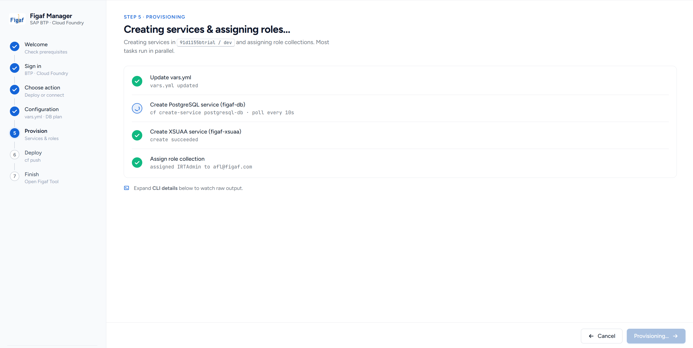
What each row does
| Row | Notes |
|---|---|
| Update vars.yml | Updates the variables file with the selected configuration from the previous step. |
| Create PostgreSQL service | Creating the database - can take several minutes. |
| Create XSUAA service | Used for authentication. Creating it also materialises all of the Figaf Tool's IRT* role collections in your subaccount. |
| Assign role collection | Grants you the IRTAdmin role - full access to the Figaf Tool. This runs after XSUAA finishes, because the role collection does not exist until then. |
| Create Connectivity / Destination service | Only if you ticked them on the previous screen. |
7.3 Deploy and Finish
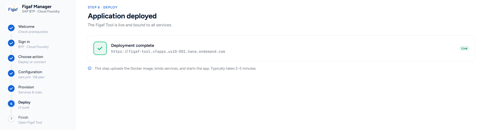
The manager-app pushes both applications. This uploads the Docker image, binds the services and starts the instances — typically 2 to 5 minutes.
If it fails, the heading reads Deployment failed and the CLI drawer holds the error. The most common cause is an org memory quota that cannot fit the new app - see Troubleshooting.
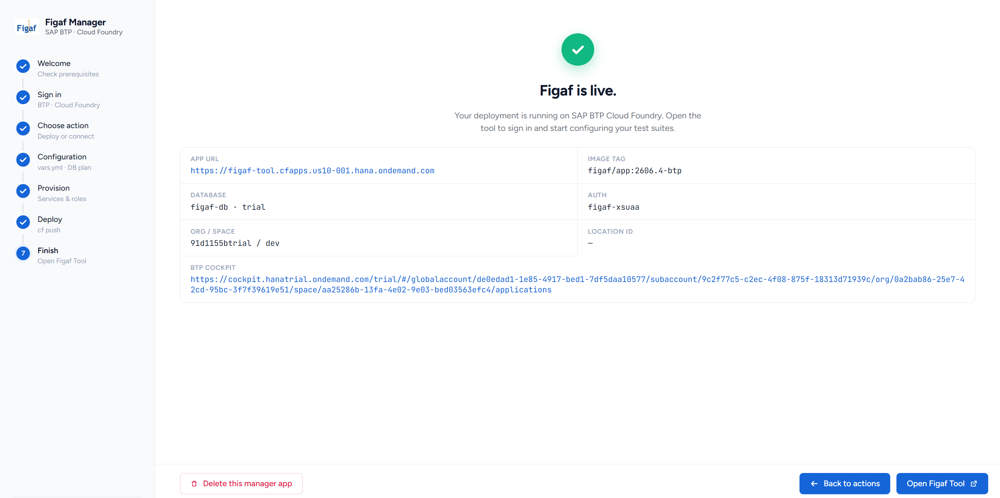
The summary shows your App URL, the image tag deployed, the database and its plan, the auth service, the org and space, the location ID, and a BTP Cockpit link that opens the space's application list.
Buttons on this screen
| Button | What it does |
|---|---|
| Open Figaf Tool | Opens the Figaf tool. Can take some minutes to respond. |
| Back to actions | Returns to Choose action so you can run another flow. |
| Enable persistent SSO login | Shortcut into section 6, if you have not done it yet. |
| Delete this manager app | Removes the manager-app. See section 11 before using it. |
For a full descriptions of how the application works, see the Figaf user-management documentation.
Section 8
Updating the Figaf Tool
From Choose action, pick Update Figaf Tool and click Configure update. This refreshes an existing deployment onto a newer Docker image, pulling the latest deployment templates from GitHub first.
8.1 Configure update
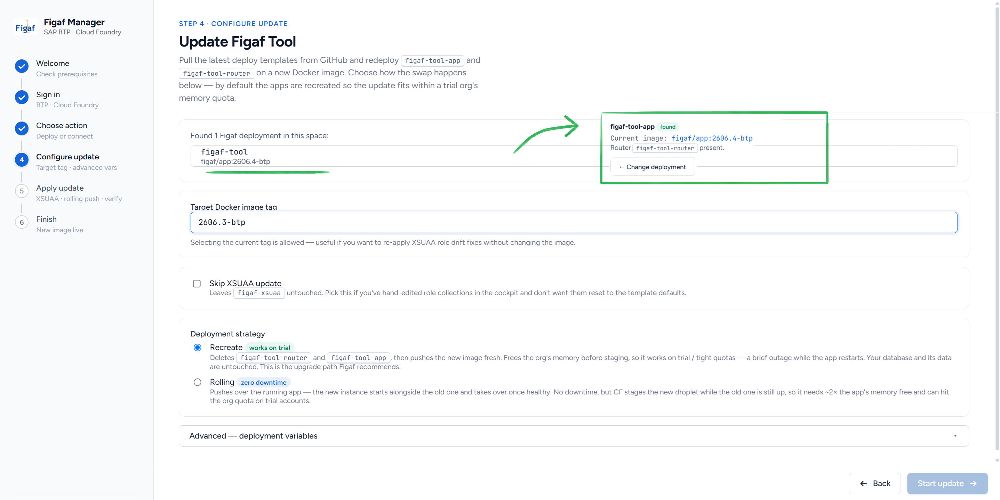
Choose your deployment. The manager-app scans the space for a figaf deployment. Click on the deployment found, or manually enter the Deployment ID(without the -app suffix) and click Detect.
Target Docker image tag - choose from the available releases.
Skip XSUAA update - tick this if you have hand-edited the Figaf Tool's role collections in the cockpit and do not want them reset to the shipped defaults. Otherwise leave it off.
Deployment strategy - Recreate (reccommended) or Rolling (requires more resources, less downtime)
Advanced — deployment variables (collapsed) holds the remaining settings — domain, location ID, memory, RAM percentage, log cap, monitoring, SMTP, and the optional PI services. These are loaded from the live application. Open it if you want to modify properties.
- An warning note appears if some live values could not be read; Make sure a deployment is selected.
- Database service name is read-only during an update — it is detected from the running application and must not change. If detection failed, the field turns red and you must type the exact name of the bound PostgreSQL instance; getting it wrong would point the updated app at a different database.
Click Start update.
If a previous update stopped part-way, a banner offers Resume (picking up at the phase that failed) or Discard & start over.
8.2 Apply update
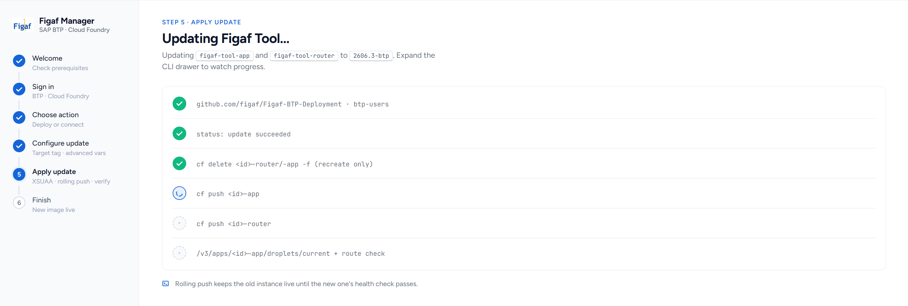
The seven phases
| Phase | What happens |
|---|---|
| Refresh deploy templates | Fetches the current deployment templates. |
| Update XSUAA service | Re-applies the role definitions. Skipped if you ticked the option. |
| Delete current apps | Recreate strategy only — frees quota before staging. |
| Create PI services | Only if connectivity/destination are selected. |
| Push app | The Figaf Tool itself. |
| Push router | The approuter. |
| Verify deployment | Confirms the new image is live and the route responds. |
On failure the heading reads "Update halted", and you get "Retry from failed phase" (state is preserved, so it resumes rather than restarting) or "Abort & clear state".
8.3 Finish
The summary shows the deployment ID, App URL, the previous and current image, router health, and the org/space. "Start another action" clears the update state and returns you to "Choose action".
Section 9
Connecting to SAP Integration Suite
From Choose action, pick Connect to Integration Suite.
In this step, you will work along the Figaf Tool, helping you to provide the necessary data for connecting it to Integration Suite. In Figaf, go to Configuration -> Agent -> Create CPI Agent.
9.1 Provision
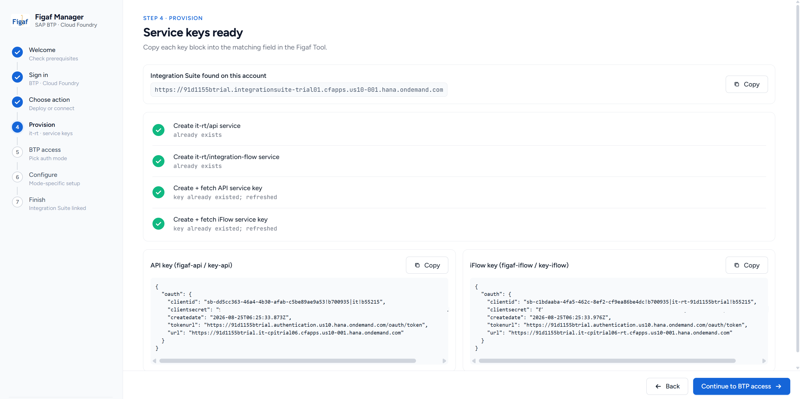
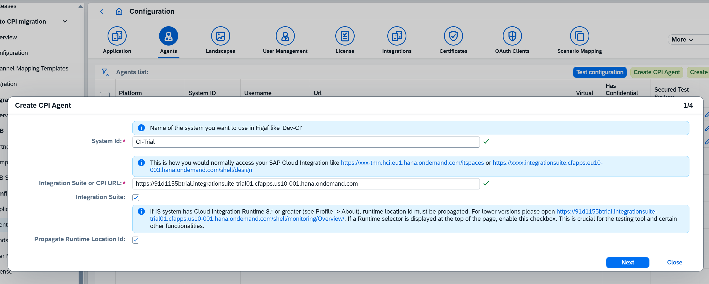
The manager-app first checks that the it-rt service offering is available. If
not, the heading reads Integration Suite not entitled — subscribe the Integration
Suite tenant to this subaccount in the cockpit, then click Retry.
Otherwise it creates two services and their access keys:
What gets created
| Row | Result |
|---|---|
| Create it-rt/api service | figaf-api |
| Create it-rt/integration-flow service | figaf-iflow |
| Create + fetch API service key | key-api |
| Create + fetch iFlow service key | key-iflow |
When all four are green, two key cards appear. Copy each key block into the matching fields coming next in the Figaf Tool setup
Click Continue to BTP access.
9.2 BTP access
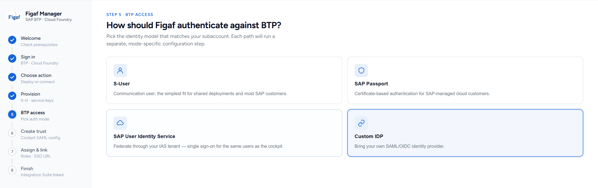
Choose how the Figaf Tool authenticates against BTP. The options are: Custom IDP (recommended), S-User,SAP Passport, SAP User Identity Service.
Each option's page explains its characteristics and the steps required to configure it.
9.3 Custom IDP option
This is the one manual cockpit step in the flow — BTP has no command-line way to import a SAML trust.
- In the Figaf Tool, download the entity description file, selecting Custom IDP as the authentication mode.
- In the manager-app, click Open to go to the Trust Configuration page of your subaccount (Btp -> Security -> Trust Configuration)
- Choose Add SAML Trust, upload the downloaded file, and untick Available for User Logon. The ? next to this step shows a reference screenshot of the page.
- If a role fails, Retry failed re-runs just that one. You can still finish and assign the remainder in the cockpit later.
- If your BTP session expired mid-flow the row says so — go Back and sign in again.
Copy the SSO URL and paste it into the Figaf Tool. Then click Finish.
Then enter the IDP name exactly as you named it in the cockpit — default
figaf-saml — and click Continue.
The manager-app assigns three role collections to the Admin group of your new
trust — PI_Administrator, PI_Business_Expert,
PI_Integration_Developer — and fetches the SSO URL.
Section 10
Keeping Figaf Manager itself up to date
If a newer version is available, the option to update the manager-app appears as a notification at the top of the screen, with a link to the release notes.
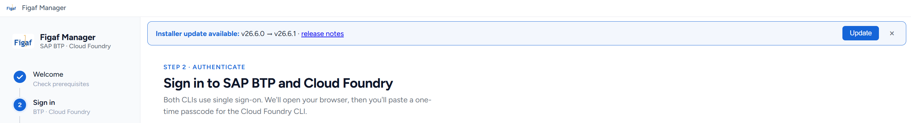
Click Update to open the update dialog. It first confirms that your Cloud Foundry session points at the same landscape, org and space as the manager-app itself. If a row is marked ✗, sign in or use Switch Org on the sign-in screen — Update now stays disabled until all three match.
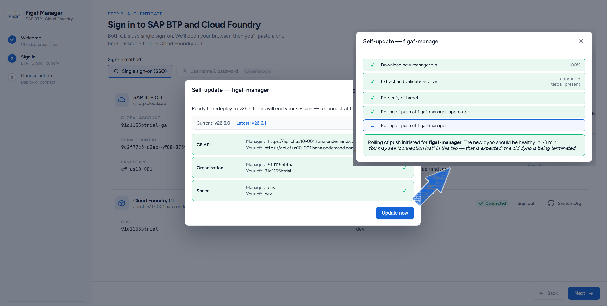
From there it runs on its own: it fetches the new version and redeploys the manager-app in place. Nothing you have already set up is affected.
You will need to refresh the page after the update is complete, and sign in again with the new token from the application's logs
Section 11
Removing Figaf Manager
You can leave the manager-app deployed — it is small, and it is what you will use for future updates. If you would rather not leave it deployed, here is how to take it down cleanly.
11.1 The in-app button
The Finish screens have Delete this manager app.
Only the figaf-manager application. Anything the manager-app deployed — your Figaf Tool, its database, its services — is not affected.
11.2 Delete from BTP Cockpit
Manual removal from the cockpit
To remove the manager-app and its XSUAA service from the space, you can also do it manually in the cockpit or with the Cloud Foundry CLI. The steps are:
- Unbind the XSUAA service from
figaf-manager-approuter. - Delete the
figaf-manager-approuterapplication. - Delete the
figaf-manager-xsuaaservice instance. - Optionally delete the
FigafManagerAdminandFigafManagerOperatorrole collections from the subaccount.
cf unbind-service figaf-manager-approuter figaf-manager-xsuaa cf delete figaf-manager-approuter -r -f cf delete-service figaf-manager-xsuaa -f
11.3 Automatic removal
If you set FIGAF_IDLE_SELF_DESTRUCT_HOURS on the application, the manager-app
removes itself after that many hours with no activity — the approuter, the manager-app, and
the figaf-manager-xsuaa service, all in one go. A warning is written to the
log FIGAF_IDLE_SELF_DESTRUCT_GRACE minutes beforehand (default 30).
Section 12
Troubleshooting
| Symptom | Cause | Fix |
|---|---|---|
| Setup page reports the installer has already been claimed | The session cookie is no longer valid — it expired after 8 hours, or the public IP address or browser it was issued to changed. The token itself is consumed by the first claim and cannot be reused while the application keeps running. | Restage the application and claim the new token, as in 3.3. Do not clear cookies first: with the application still running that leads straight back to this page, and it also discards any sign-in progress. After the persistent SSO upgrade (§6) no token is issued at all — sign in through SAP IAS instead. |
No [SETUP] Token: line in the log | Wrong application, the log view no longer covers the last start, or persistent SSO login is already enabled. | Restage and read the newest lines. With persistent SSO enabled the log reads [INFO] XSUAA mode active instead; sign in through SAP IAS. |
| 403 after signing in through SAP IAS | FigafManagerAdmin is not assigned, or the token was issued before the assignment. | Assign the role collection in the cockpit, then sign in again from a private window, or after clearing cookies for the hostname. |
| Signed out of Cloud Foundry mid-session, with no error message | The wizard session is renewed after 4 hours. The renewal resets the Cloud Foundry login and any downloaded deployment templates. The browser session lasts 8 hours, so the wizard itself stays open. | Sign in to Cloud Foundry again and continue. Start long deployments on a fresh session. |
| Wrong Cloud Foundry target on the upgrade or self-update screen | The cf session targets a different org, space or landscape. All browser sessions share one cf login, so another tab can change it. | Different org or space: Go to login → Switch Org. Different landscape: sign out and sign in again to the manager-app's own landscape. |
| Persistent-login upgrade does not confirm within 5 minutes | The health probe did not report XSUAA mode in time. The upgrade has usually succeeded regardless. | Click Continue. If the old setup page appears, the service bind failed — check figaf-manager-xsuaa in the cockpit and re-run the upgrade. Repeating it is safe. |
| Passcode rejected | Expired, or already used. | Click Get a new one and paste it immediately. |
| Docker Hub reachable check is red | The space has no outbound access to hub.docker.com, which the manager-app queries for the image tag list. | Fix egress. The Welcome step cannot be passed until the check succeeds. |
| PostgreSQL service fails to create, or never leaves create in progress (15-minute limit) | postgresql-db or the selected plan is not entitled to the subaccount, or the parameters do not match the account type. When the marketplace lookup fails the plan list falls back to generic defaults, so an unavailable plan can still be offered. | Confirm the entitlement in the cockpit (global account → Entitlements), then go Back and Continue to re-read the plan list. Check that Trial subaccount matches reality — trial brokers accept only engine version and locale. |
| Provider (AWS / Azure / GCP) couldn't be detected | The hyperscaler cannot be inferred from the subaccount region. | Tick Trial subaccount, or go back and select a subaccount with a recognised region. |
cf push fails on memory / staging requires NNNNM | The org quota cannot fit the new instance. | Lower Instance memory — it is by far the largest allocation. For updates, keep the Recreate strategy (the default); Rolling needs roughly twice the memory free. Otherwise delete unused applications. |
| Update: Database name not detected | The bound PostgreSQL instance could not be read from the live application. | Enter the exact service instance name bound to <ID>-app. An incorrect name binds the updated application to a different database. |
| Integration Suite not entitled | The it-rt offering is not available in the subaccount. | Subscribe the Integration Suite tenant, then click Retry. |
| Custom IDP: the trust cannot be found | Name mismatch, or the trust was not saved. | Correct the IDP name against the list of trusts reported on screen, or save the trust in the cockpit and click Continue again. |
| A step turns red and the message is not enough | — | Expand CLI details at the bottom of the screen for the exact command and its full output. |
Section 13
Reference
Applications and services
| Name | What it is | Created by |
|---|---|---|
figaf-manager | The manager-app | You, from the cockpit (§3) |
figaf-manager-approuter | Authentication proxy in front of the manager-app | Persistent SSO login (§6) |
figaf-manager-xsuaa | Auth service for the manager-app | Persistent SSO login (§6) |
<ID>-app | The Figaf Tool | Deploy (§7) |
<ID>-router | The Figaf Tool's approuter — serves the public URL | Deploy (§7) |
figaf-db (configurable) | PostgreSQL database for the Figaf Tool | Deploy (§7) |
figaf-xsuaa | Auth service and role definitions for the Figaf Tool | Deploy (§7) |
figaf-connectivityfigaf-destination | Optional, for PI/PO via SAP Cloud Connector | Deploy / Update, if selected |
figaf-apifigaf-iflow | Integration Suite access | Connect (§9) |
Role collections
| Role collection | Applies to | Grants |
|---|---|---|
FigafManagerAdmin | The manager-app | Full use, including deletion |
FigafManagerOperator | The manager-app | Non-destructive operations |
IRTAdmin | The Figaf Tool | Full access |
IRTUser, IRTConfigurator, IRTOperator, IRTManager, IRTDevOps*, IRTSensitivePayloadViewer, and others | The Figaf Tool | See Figaf user management |
PI_Administrator, PI_Business_Expert, PI_Integration_Developer | Integration Suite access | Assigned by the Connect flow |
Environment variables on figaf-manager
| Variable | Default | Effect |
|---|---|---|
FIGAF_LOG_LEVEL | cli | off | cli | ipc | net |
FIGAF_IDLE_SELF_DESTRUCT_HOURS | off | Remove the manager-app after N idle hours |
FIGAF_IDLE_SELF_DESTRUCT_GRACE | 30 | Minutes of warning first |
FIGAF_DISABLE_SELF_UPDATE | off | Turn off the update check |
FIGAF_DEPLOYMENT_ZIP_URL | GitHub | Use your own deployment-template mirror |
Outbound hosts
| Host | Used for |
|---|---|
hub.docker.com | Image tag lookup |
| Docker registry | Image pull during deployment |
api.github.com, github.com | Deployment templates, manager-app update check |
cli.btp.cloud.sap | BTP sign-in |
api.cf.<region>.hana.ondemand.com | Cloud Foundry API |
login.<region>.hana.ondemand.com | One-time passcode page |